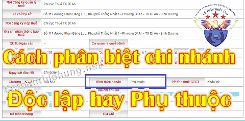
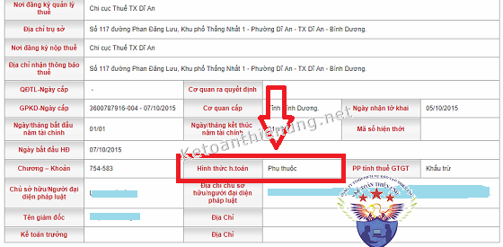

Thế nào là chi nhánh hạch toán phụ thuộc và độc lập? Làm sao để biết chi nhánh hạch toán độc lập hay phụ thuộc? kế toán Diệu Tâm xin hướng dẫn cách kiểm tra để phân biệt chi nhánh hạch toán phụ thuộc hay độc lập, cách kê khai thuế, hạch toán cho những chi nhánh này.

--------------------------------------------------------------------
1. Cách kiểm tra Chi nhánh độc lập hay phụ thuộc:
Đối với nhiều bạn kế toán khi mới vào làm tại những DN có chi nhánh, không rõ là các chi nhánh đó hạch toán độc lập hay phụ thuộc (Vì trên Giấy phép kinh doanh của Chi nhánh không thể hiện việc đó).
-> Có nhiều cách để biết được Chi nhánh đó hạch toán độc lập hay phụ thuộc, các bạn có thể làm theo các cách sau:
Cách 1: - Liên hệ với Giám đốc hoặc những người có liên quan (như kế toán cũ, người làm thủ tục đăng ký kinh doanh mở chi nhánh ...) để kiểm tra lại hồ sơ giấy tờ, Thông báo đăng ký thuế, Thông báo thay đổi kinh doanh của DN ...
Cách 2: - Đăng nhập vào trang nhantokhai, thuedientu ... bằng MST của chi nhánh (Ví dụ: 010620856-001) -> Tiếp đó vào mục "Tra cứu" để xem các năm trước họ nộp những gì:
+) Nếu chỉ nộp các Tờ khai thuế môn bài, thuế GTGT, TNCN thì là Chi nhánh phụ thuộc.
+) Nếu ngoài các Tờ khai trên còn nộp Tờ khai Quyết toán thuế TNDN, Báo cáo tài chính thì là Chi nhánh độc lập.
Cách 3: - Truy cập vào trang tracuunnt.gdt.gov.vn hoặc dangkyquamang.dkkd.gov.vn ... bằng MST của Chi nhánh hoặc Công ty đều được (Nếu là MST công ty sẽ hiển thị toàn bộ các Chi nhánh của Công ty -> Muốn xem chi nhánh nào thì bấm vào Chi nhánh đó).

-------------------------------------------------------------------------------------------
2. Quy định về Chi nhánh hạch toán độc lập và phụ thuộc:
Để tránh hiểu nhầm, việc trước tiên cần phân biệt rõ khái niệm “Đơn vị phụ thuộc” (theo Luật doanh nghiệp) và “hạch toán phụ thuộc” (theo Luật Kế toán).
Theo khoản 1 điều 45 Luật Doanh nghiệp số 68/2014/QH13 quy định:
“Điều 45. Chi nhánh, văn phòng đại diện và địa điểm kinh doanh của doanh nghiệp
1. Chi nhánh là đơn vị phụ thuộc của doanh nghiệp, có nhiệm vụ thực hiện toàn bộ hoặc một phần chức năng của doanh nghiệp kể cả chức năng đại diện theo ủy quyền. Ngành, nghề kinh doanh của chi nhánh phải đúng với ngành, nghề kinh doanh của doanh nghiệp.”
Như vậy Chi nhánh là không có tư cách pháp nhân đồng thời là đơn vị PHỤ THUỘC của doanh nghiệp.
-----------------------------------------------------------
Về phân cấp hạch toán kế toán:Căn cứ vào khoản 4, điều 3 Luật Kế toán 88/2015/QH13quy định:
“Đơn vị kế toán là cơ quan, tổ chức, đơn vị quy định tại các khoản 1,2,3,4 và 5 điều 2 của Luật này có lập báo cáo tài chính”
Khoản 4 điều 2 Luật kế toán 88:
"4. Doanh nghiệp được thành lập và hoạt động theo pháp luật Việt Nam; chi nhánh, văn phòng đại diện của doanh nghiệp nước ngoài hoạt động tại Việt Nam."
Theo khoản 1, điều 3, Nghị định 174/2016/NĐ-CP quy định chi tiết một số điều của Luật kế toán 2015 quy định:
“Đơn vị kế toán trong lĩnh vực kinh doanh bao gồm doanh nghiệp được thành lập và hoạt động theo pháp Luật Việt Nam; chi nhánh doanh nghiệp nước ngoài hoạt động tại Việt Nam; hợp tác xã, liên hiệp hợp tác xã; ban quản lý dự án, đơn vị khác có tư cách pháp nhân do doanh nghiệp thành lập.”
Theo thông tư 156/2013/TT-BTC ngày 6/11/2013 hướng dẫn về thi hành Luật Quản lý thuế:
+ Tại khoản 1b, 1c điều 11 quy định khai thuế giá trị gia tăng:
“Trách nhiệm nộp hồ sơ khai thuế giá trị gia tăng cho cơ quan thuế
b) Trường hợp người nộp thuế có đơn vị trực thuộc kinh doanh ở địa phương cấp tỉnh, thành phố trực thuộc trung ương cùng nơi người nộp thuế có trụ sở chính thì người nộp thuế thực hiện khai thuế giá trị gia tăng chung cho cả đơn vị trực thuộc.
Nếu đơn vị trực thuộc có con dấu, tài khoản tiền gửi ngân hàng, trực tiếp bán hàng hóa, dịch vụ, kê khai đầy đủ thuế giá trị gia tăng đầu vào, đầu ra có nhu cầu kê khai nộp thuế riêng phải đăng ký nộp thuế riêng và sử dụng hóa đơn riêng.
c) Trường hợp người nộp thuế có đơn vị trực thuộc kinh doanh ở địa phương cấp tỉnh khác nơi người nộp thuế có trụ sở chính thì đơn vị trực thuộc nộp hồ sơ khai thuế giá trị gia tăng cho cơ quan thuế quản lý trực tiếp của đơn vị trực thuộc;
Nếu đơn vị trực thuộc không trực tiếp bán hàng, không phát sinh doanh thu thì thực hiện khai thuế tập trung tại trụ sở chính của người nộp thuế”
+ Tại khoản 1b, 1c điều 12 quy định khai thuế thu nhập doanh nghiệp:
“Trách nhiệm nộp hồ sơ khai thuế thu nhập doanh nghiệp cho cơ quan thuế
b) Trường hợp người nộp thuế có đơn vị trực thuộc hạch toán độc lập thì đơn vị trực thuộc nộp hồ sơ khai thuế thu nhập doanh nghiệp phát sinh tại đơn vị trực thuộc cho cơ quan thuế quản lý trực tiếp đơn vị trực thuộc.
c) Trường hợp người nộp thuế có đơn vị trực thuộc nhưng hạch toán phụ thuộc thì đơn vị trực thuộc đó không phải nộp hồ sơ khai thuế thu nhập doanh nghiệp; khi nộp hồ sơ khai thuế thu nhập doanh nghiệp, người nộp thuế có trách nhiệm khai tập trung tại trụ sở chính cả phần phát sinh tại đơn vị trực thuộc.”
+ Tại khoản 4b điều 12 quy định khai quyết toán thuế thu nhập doanh nghiệp:
“b) Hồ sơ khai quyết toán thuế thu nhập doanh nghiệp bao gồm:
b.1) Tờ khai quyết toán thuế thu nhập doanh nghiệp theo mẫu số 03/TNDN ban hành kèm theo Thông tư này.
b.2) Báo cáo tài chính năm hoặc Báo cáo tài chính đến thời điểm có quyết định về việc doanh nghiệp thực hiện chia, tách, hợp nhất, sáp nhập, chuyển đổi hình thức sở hữu, giải thể, chấm dứt hoạt động.
b.3) Một hoặc một số phụ lục kèm theo tờ khai ban hành kèm theo Thông tư này (tuỳ theo thực tế phát sinh của người nộp thuế):…”
------------------------------------------------------------
Như vậy:
1. Nếu là chi nhánh hạch toán độc lập:
- Có MST riêng (13 số).
- Có con dấu riêng, Tài khoản ngân hàng riêng.
- Sử dụng hoá đơn và Báo cáo tình hình sử dụng hóa đơn tại Chi nhánh.
- Trực tiếp kê khai thuế Môn bài, GTGT, TNCN và Quyết toán thuế TNDN tại Chi nhánh.
- Có tổ chức bộ máy kế toán (mọi nghiệp vụ kinh tế phát sinh của Chi nhánh được ghi sổ kế toán tại Chi nhánh).
- Tự lập và nộp Báo cáo tài chính tại chi nhánh.
Kết luận: Chi nhánh hạch toán độc lập sẽ tự làm hết mọi việc (như 1 DN bình thường) -> Công ty mẹ sẽ làm báo cáo tài chính hợp nhất
2. Nếu là chi nhánh hạch toán phụ thuộc:
a) Nếu chi nhánh cùng Tỉnh với trụ sở chính:
- Kê khai tập trung tại trụ sở chính.
- Nếu chi nhánh phụ thuộc cùng Tỉnh có con dấu riêng, có tài khoản ngân hàng riêng, trực tiếp bán hàng hóa, dịch vụ -> Thì có thể liên hệ với Chi cục thuế Chi nhánh để đăng ký kê khai thuế riêng và sử dụng hóa đơn riêng.
b, Nếu là chi nhánh khác tỉnh với Trụ sở chính:
- Có MST riêng.
- Có con dấu riêng.
- Sử dụng hoá đơn và Báo cáo tình hình sử dụng hóa đơn tại Chi nhánh.
- Kê khai thuế môn bài, thuế GTGT, TNCN tại chi nhánh.
-> Quyết toán thuế TNDN và Báo cáo tài chính tại Trụ sở chính.
Xem thêm: Cách kê khai thuế cho chi nhánh
- Nếu chi nhánh hạch toán phụ thuộc khác Tỉnh không trực tiếp bán hàng, không phải sinh doanh thu thì có thể liên hệ với Chi cục thuế chi nhánh để xác nhận và Kê khai tập trung tại trụ sở chính.
|
Theo Công văn 23473/CT-TTHT ngày 22/04/2019 của Cục thuế TP Hà Nội: Trường hợp Công ty TNHH TMDV tin học An Phát có trụ sở chính tại TP Hà Nội và Chi nhánh hạch toán phụ thuộc tại TP Hồ Chí Minh thì thực hiện khai thuế như sau: + Về thuế GTGT: Chi nhánh thực hiện kê khai, nộp thuế GTGT tại cơ quan thuế trực tiếp quản lý chi nhánh theo quy định. + Về thuế TNDN: Chi nhánh Công ty không phải nộp hồ sơ khai thuế TNDN. Công ty có trách nhiệm khai tập trung tại trụ sở chính cả phần phát sinh tại Chi nhánh. + Về thuế TNCN: Trường hợp Chi nhánh có phát sinh chi trả thu nhập từ tiền lương, tiền công cho các cá nhân làm việc tại Chi nhánh hoặc các cá nhân khác thì Chi nhánh có trách nhiệm khấu trừ, kê khai thuế TNCN. + Về thuế môn bài: Chi nhánh thực hiện nộp Hồ sơ khai lệ phí môn bài cho cơ quan thuế trực tiếp quản lý Chi nhánh. |
Kết luận: Chi nhánh hạch toán phụ thuộc: Sẽ chuyển số liệu, hóa đơn, chứng từ về công ty để quyết toán thuế TNDN và Báo cáo tài chính tại tại trụ sở chính.
Xem thêm: Cách hạch toán chi nhánh phụ thuộc
-----------------------------------------------------------------------------------------------------
Kế toán Diệu Tâm xin chúc các bạn thành công!
Kế toán Diệu Tâm xin chúc các bạn thành công!